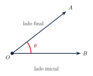
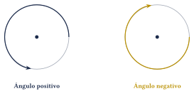
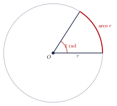
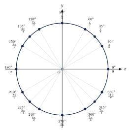

Capítulo 24
Medida de ángulos
UNAMIPNCENEVAL
Antes de estudiar las razones trigonométricas, es necesario conocer las principales unidades utilizadas para medir ángulos. El sistema sexagesimal expresa las medidas en grados, minutos y segundos, mientras que el sistema circular utiliza radianes. En este capítulo aprenderás a interpretar ambas unidades, convertir entre ellas y reconocer las equivalencias de los ángulos notables.
24.1 Concepto de ángulo#
Un ángulo es la figura formada por dos semirrectas que tienen el mismo punto de origen.
Las semirrectas se denominan lados del ángulo y su origen común recibe el nombre de vértice.
Un ángulo puede denotarse mediante tres letras:
donde la letra central \(O\) representa el vértice.
También puede representarse mediante una letra griega, como:
Los elementos de un ángulo pueden identificarse en la siguiente figura:

Cuando se considera el sentido de giro, se utiliza la noción de ángulo orientado:
- un giro en sentido contrario a las manecillas del reloj se considera positivo;
- un giro en el sentido de las manecillas del reloj se considera negativo.
Los sentidos positivo y negativo pueden representarse de la siguiente manera:

24.2 Sistema sexagesimal#
En el sistema sexagesimal, una vuelta completa se divide en \(360\) partes iguales. Cada una de estas partes se denomina grado y se representa mediante el símbolo:
Por tanto:
Cada grado se divide en \(60\) partes iguales llamadas minutos de arco, y cada minuto se divide en \(60\) partes iguales llamadas segundos de arco.
Se utilizan las equivalencias:
y, por tanto:
Los minutos y segundos utilizados para medir ángulos no representan unidades de tiempo. Aunque emplean los mismos nombres, en este contexto representan fracciones de un grado.
Las siguientes medidas corresponden a fracciones de una vuelta:
- un cuarto de vuelta: \[90^\circ;\]
- media vuelta: \[180^\circ;\]
- tres cuartos de vuelta: \[270^\circ;\]
- una vuelta completa: \[360^\circ.\]
24.3 Grados decimales y grados, minutos y segundos#
Una medida angular puede expresarse mediante grados decimales o mediante grados, minutos y segundos.
Para convertir minutos a grados se divide entre \(60\). Para convertir segundos a grados se divide entre \(3600\):
Convierte:
a grados decimales.
Ver solución
Como:
se tiene:
Convierte:
a grados y minutos.
Ver solución
La parte entera corresponde a los grados:
Convertimos la parte decimal a minutos:
Por tanto:
Convierte:
a grados decimales.
Ver solución
Aplicamos la fórmula:
24.4 Sistema circular#
Un radián es la medida del ángulo central que intercepta un arco cuya longitud es igual al radio de la circunferencia.
La unidad puede indicarse mediante la abreviatura:
La definición puede visualizarse en la siguiente figura. El radio y el arco destacado tienen la misma longitud:

Un radián mide aproximadamente:
El radián no depende del tamaño de la circunferencia. Si el radio aumenta, la longitud del arco correspondiente a un radián aumenta en la misma proporción.
24.5 Longitud de arco y medida en radianes#
Si un ángulo central mide \(\theta\) radianes en una circunferencia de radio \(r\), la longitud del arco correspondiente es:
De manera equivalente:
La fórmula:
se aplica directamente cuando \(\theta\) está expresado en radianes.
Si el ángulo está expresado en grados, primero debe convertirse a radianes o debe utilizarse:
Un ángulo central mide:
en una circunferencia de radio:
Encuentra la longitud del arco.
Ver solución
Aplicamos:
Entonces:
24.6 Equivalencia entre grados y radianes#
Una vuelta completa equivale a:
Al dividir ambos miembros entre \(2\), se obtiene:
De esta equivalencia se deduce:
y:
24.7 Conversión entre grados y radianes#
Para convertir una medida de grados a radianes, se multiplica por:
Por tanto:
Para convertir una medida de radianes a grados, se multiplica por:
Por tanto:
Los factores de conversión son iguales a \(1\), pues sus numeradores y denominadores representan la misma medida angular:
y:
Multiplicar por estos factores cambia la unidad, pero no cambia el ángulo.
Convierte:
a radianes.
Ver solución
Multiplicamos por el factor de conversión:
Por tanto:
Convierte:
a grados.
Ver solución
Multiplicamos por el factor correspondiente:
Por tanto:
Convierte:
a radianes.
Ver solución
Por tanto:
Convierte:
a grados.
Ver solución
Por tanto:
Convierte:
a radianes.
Ver solución
Por tanto:
24.8 Ángulos coterminales#
Dos ángulos son coterminales si, al colocarlos en posición estándar, tienen el mismo lado inicial y el mismo lado final.
Sus medidas difieren en un número entero de vueltas completas.
Si \(\theta\) está expresado en grados, todos sus ángulos coterminales pueden escribirse como:
Si \(\theta\) está expresado en radianes, se escriben como:
Encuentra un ángulo positivo y uno negativo coterminales con:
Ver solución
Sumamos una vuelta completa:
Restamos una vuelta completa:
Por tanto, dos ángulos coterminales son:
24.9 Ángulos notables#
Las equivalencias más utilizadas son:
Para recordar estas equivalencias, puede comenzarse con:
y expresar cada ángulo como una fracción de \(180^\circ\).
Por ejemplo:
24.10 Representación de ángulos notables#
La siguiente circunferencia muestra las equivalencias principales en grados y radianes. Todos los ángulos se miden desde el eje positivo \(x\) en sentido contrario a las manecillas del reloj.

El símbolo \(\pi\) no debe reemplazarse por una aproximación decimal durante una conversión exacta.
Por ejemplo, es preferible escribir:
en lugar de:
La forma con \(\pi\) conserva el valor exacto.
24.11 Ejercicios propuestos#
Convierte a radianes:
Ver solución
Convierte a radianes:
Ver solución
Convierte a radianes:
Ver solución
Convierte a radianes:
Ver solución
Convierte a grados:
Ver solución
Convierte a grados:
Ver solución
Convierte a grados:
Ver solución
Convierte a grados:
Ver solución
Convierte a radianes:
Ver solución
Convierte a grados: